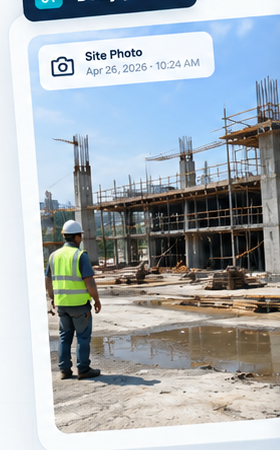
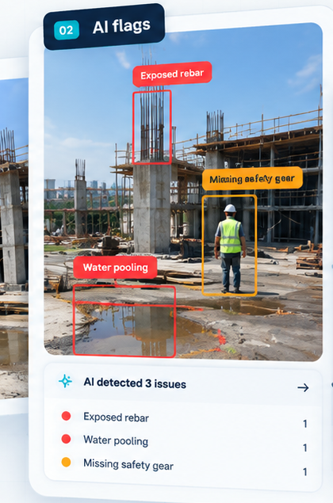
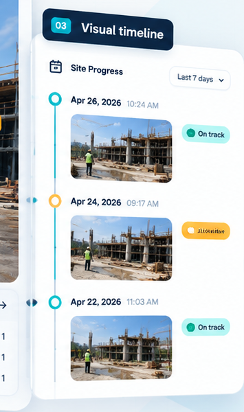
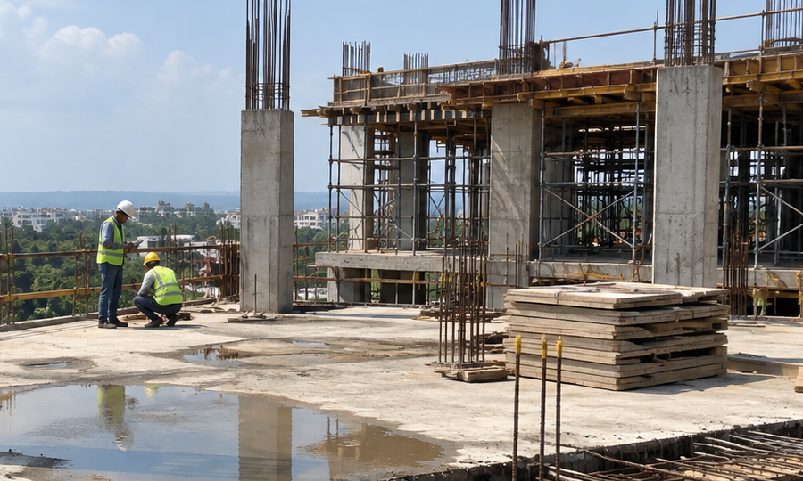

DAILY SITE VISIBILITY
Catch it before the concrete dries.
SiteCheck turns your daily construction photos into an early-warning system for safety, quality and progress — without requiring you to be at every site.
2–10sites managed
Dailyphoto review
AIissue detection
SITE OVERVIEW
TODAY


AI issue detection
Daily visual record
THE JOBSITE VISIBILITY GAP
You can't be on every site.
Problems don't wait.
When updates arrive as a stream of WhatsApp photos, important details get buried. SiteCheck gives those photos a systematic review.
01
Photos pile up
Supervisors send daily photos, but nobody has time to inspect every image carefully.
02
Issues stay hidden
Small visible problems can go unnoticed until they become expensive rework or delays.
03
Progress gets unclear
Without a visual record, comparing today's site condition with yesterday's plan is difficult.
HOW SITECHECK WORKS
From site photos to
actionable visibility.
Keep the workflow simple. Your supervisor keeps taking photos. SiteCheck does the first-pass review.
01UPLOAD
↑
Drop site photosor upload from phoneUpload daily photos
Bring in the photos your supervisors already capture from each active site.
02AI REVIEW
ANALYSING IMAGE
✓ 4 visual checks complete
AI flags visible issues
SiteCheck reviews images for common safety, quality and progress signals that need attention.
03ACT
!
Exposed rebarSector A · Photo 04
→✓
Safety gearSector A · Photo 05
→!
Water poolingSector B · Photo 02
→Review and act early
Get a dated record of what changed, what was flagged and where your attention is needed.
BUILT FOR THE JOBSITE
One daily view of what needs attention.
SiteCheck is designed around the realities of small construction teams: multiple sites, limited time and a phone-first workflow.
VISIBLE ISSUE DETECTION
See problems before they become rework.
Surface visual signals such as exposed reinforcement, water pooling and missing safety gear so a supervisor can review them early.
EXPOSED REBAR
SAFETY GEAR
WATER POOLING
VISUAL TIMELINE
Know what changed.
Keep dated visual records so you can compare site conditions over time.
28 SEP
27 SEP
26 SEP
DAILY SITE SUMMARY
Start your day informed.
Review flagged items and site status from one concise dashboard instead of chasing messages.
3 SITES2items need review
WHY SITECHECK
Built for contractors who manage more than one site.
Your team shouldn't need another complicated system. SiteCheck fits into the daily photo workflow you already have and adds a layer of structured visibility.
- ✓Phone-first workflowDesigned for supervisors and contractors on the move.
- ✓Focused AI reviewFlags visible conditions that deserve human attention.
- ✓One view across sitesKeep multiple projects visible without being everywhere.
VISUAL SITE TIMELINE
MONITOREDHarbor Heights · Sector A
TODAY28 SEP

2 items flaggedExposed rebar · safety gear
YESTERDAY27 SEP
All clearNo items requiring review
26 SEP26 SEP
1 item flaggedWater pooling
READY TO SEE IT IN ACTION?
Don't wait until the
concrete dries.
See how SiteCheck can turn your daily site photos into a practical early-warning workflow.